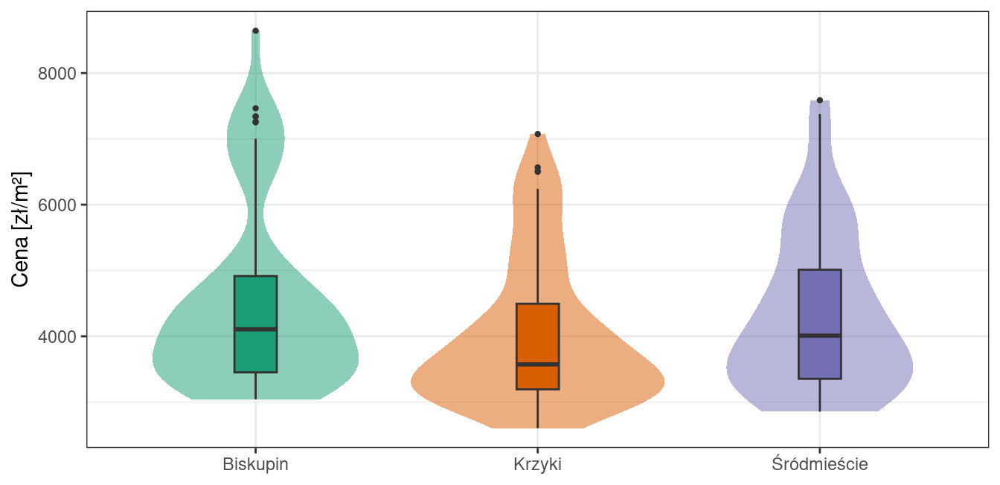
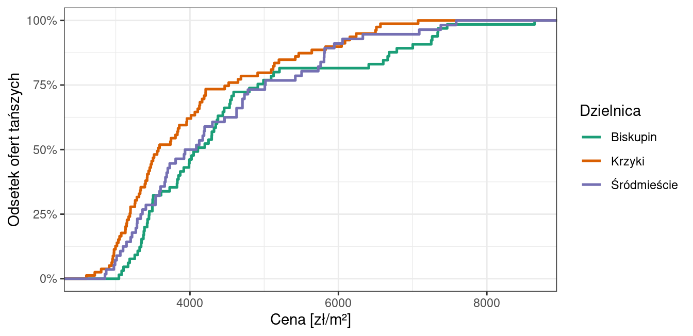
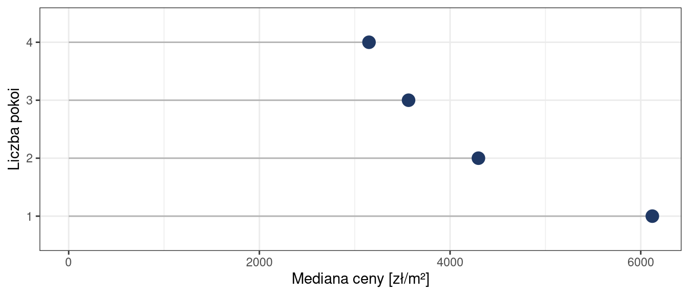
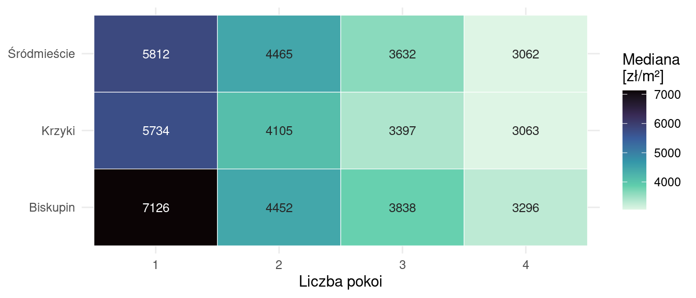
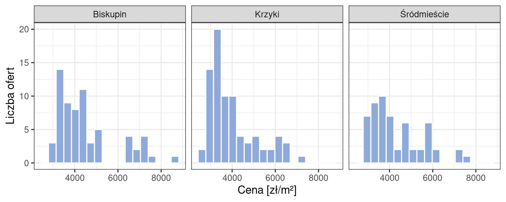

library(dplyr)
library(ggplot2)
mieszkania <- read.csv("dane/daneMieszkania.csv") |>
mutate(cena_m2 = cena / powierzchnia,
dzielnica = recode(dzielnica, "Srodmiescie" = "Śródmieście"))20 Tworzenie raportów
Raport statystyczny to dokument, w którym przedstawia się wyniki analizy danych. Nie jest to zapis przebiegu pracy ani lista wykonanych poleceń - jest to uporządkowana odpowiedź na postawione pytanie, poparta liczbami i rycinami.
Rozdział omawia zasady budowy raportu. Napisany według nich przykład znajduje się w rozdziale 21.
20.1 Analiza statystyczna
Podstawowym elementem każdej analizy statystycznej jest wykonanie charakterystyki statystycznej danych. Powinna ona obejmować zarówno obliczenie statystyk opisowych, jak i wizualizację wyników. Wyniki przedstawia się w postaci tabel, wykresów oraz map.
20.2 Kompozycja raportu
Każdy raport przedstawiający opracowanie statystyczne powinien składać się z kilku części:
Wprowadzenie
- stanowi wprowadzenie do problematyki,
- kończy się wyraźnym sformułowaniem celu analizy; warto rozbić go na kilka pytań szczegółowych.
Dane
- informacje o wykorzystanym zbiorze danych (co mierzono? kiedy? gdzie? po co? jak?),
- źródło danych,
- liczebność zbioru i braki danych.
Metody
- jakie dane wykorzystano i jakich kroków przygotowania wymagały,
- opis metod użytych do eksploracji i analizy danych,
- wykorzystane oprogramowanie i pakiety.
Wyniki
- co odkryliśmy w wyniku analizy danych,
- wyniki eksploracji danych oraz zastosowanych testów,
- ta część zawiera zestawienia tabelaryczne i wykresy.
Wnioski i podsumowanie
- odniesienie się do postawionego celu,
- podsumowanie wyników analizy,
- stwierdzenie braków czy problemów w analizie.
Literatura
Wyniki a wnioski
To dwie różne części i nie należy ich mieszać. Sekcja Wyniki mówi, co wyszło: jakie są wartości statystyk, co widać na rycinie. Sekcja Wnioski mówi, co z tego wynika: czy cel został osiągnięty, jak odpowiadamy na postawione pytania, czego na podstawie tych danych stwierdzić nie można.
20.3 Ryciny i tabele
Ryciny zawarte w raportach muszą być wykonane z pełną dbałością o czytelność.
- wykresy muszą być czytelne oraz informacyjne,
- osie na wykresach muszą być podpisane, wraz z jednostkami,
- każda rycina i tabela musi mieć numer i podpis,
- każda rycina i tabela zamieszczona w raporcie musi być opisana w tekście.
Ostatnia zasada działa w obie strony: rycina, do której tekst się nie odwołuje, nie jest w raporcie potrzebna. Podpis ma mówić, co na rycinie widać, a nie tylko jak się ona nazywa.
20.4 Kod
- Kod załączony do raportu powinien być przejrzysty i dobrze skomentowany.
- W tekście umieszczamy tabele i wykresy, ale nie pokazujemy kodu, który je wykonał - stosujemy opcję ukrycia kodu (
code-fold). - Kod może też zostać zamieszczony w formie skryptu jako załącznik do raportu.
20.5 Nagłówek dokumentu
W bloku kodu należy dodać label: fig-nazwaryciny oraz fig-cap: “Podpis ryciny”, a następnie w tekście odwołać się do ryciny przez
@fig-nazwaryciny. Zapewni to automatyczne numerowanie rycin.W bloku kodu należy dodać label: tbl-nazwatabeli oraz tbl-cap: “Podpis tabeli”, a następnie w tekście odwołać się do tabeli przez
@tbl-nazwatabeli. Zapewni to automatyczne numerowanie tabel.Nagłówek dokumentu:
title: "Tytuł raportu"
author: "Imię Nazwisko"
date: today
format:
html:
toc: true
code-fold: true # kod domyślnie ukryty, z możliwością rozwinięcia
code-summary: "Pokaż kod"
crossref: # polskie podpisy i odwołania
fig-title: Rycina # (domyślnie "Figure")
tbl-title: Tabela # (domyślnie "Table")
fig-prefix: ryc. # (domyślnie "Figure")
tbl-prefix: tab. # (domyślnie "Table")
ref-hyperlink: false # (domyślnie true)20.6 Jak czytać przykładowy raport
Rozdział 21 zawiera przykładowy raport, napisany według powyższych zasad. Dotyczy on cen mieszkań w trzech dzielnicach Wrocławia. Czytając go, zwróć uwagę na cztery rzeczy, które decydują o ocenie raportu:
- Cel jest sformułowany wprost i rozbity na pytania szczegółowe. Dzięki temu wiadomo, po co wykonano każdą kolejną analizę.
- Każda rycina i tabela ma numer, podpis i jest omówiona w tekście.
- Analiza ma tok rozumowania, a nie jest listą wykonanych poleceń. Pierwsze spostrzeżenie prowadzi do pytania, pytanie do kolejnej ryciny, a ta do wniosku.
- Ograniczenia są nazwane wprost. Raport, który o niczym nie wątpi, jest mniej wiarygodny, a nie bardziej.
Przykład nie jest szablonem do podmiany danych
Raport z rozdziału 21 dotyczy innych danych i innego pytania badawczego niż projekt zaliczeniowy. Jednostką analizy jest tam mieszkanie, a nie państwo; porównywane są dzielnice, a nie regiony świata.
Zrobiono tak celowo. Raport, który powstaje przez podstawienie własnych danych pod cudzy tekst, zawsze to po sobie widać - a ocenie podlega między innymi dobór metod i wykresów do postawionego pytania. Z przykładu przenieś zasady: strukturę dokumentu, sposób opisywania rycin, formułowanie wniosków, uczciwe nazwanie ograniczeń. Treść, dobór wykresów i tok rozumowania wymyśl samodzielnie.
20.7 Na co zwrócić uwagę we własnym raporcie
Zasady ogólne, które warto powtórzyć
- Rodzaje wykresów dobieraj do treści, zamiast powielać jeden typ: histogram do rozkładu jednej zmiennej, wykres rozrzutu do relacji dwóch zmiennych ilościowych, wykres pudełkowy lub grzbietowy do porównania rozkładów w grupach, wykres udziałów do struktury zmiennej jakościowej.
- Liczby w tekście podawaj z jednostką i sensownie zaokrąglone - nie przepisuj wszystkich miejsc po przecinku z konsoli R.
- Ograniczenia wymieniaj konkretnie (liczebność grup, rodzaj danych, brakujące zmienne), a nie zdaniem „analiza ma pewne ograniczenia”.
- Odwołanie do ryciny nie powinno zaczynać zdania małą literą. Zamiast „ryc. 3 pokazuje…” napisz „Jak pokazuje
@fig-nazwa, …“.
Jeden nawyk wart przeniesienia
Gdy w danych pojawi się różnica między grupami, zapytaj, czy nie tłumaczy jej jakaś inna, oczywista cecha - i sprawdź to. W przykładzie z rozdziału 21 sprawdzono trzy takie cechy: powierzchnię mieszkania, typ zabudowy i liczbę pokoi. Dopiero gdy różnica przetrwa taką kontrolę, można mówić o niej jako o czymś, co wiąże się z samą lokalizacją. To rozumowanie da się przenieść na dowolne dane - zmieni się tylko to, jakie cechy trzeba sprawdzić.
Czego nie przenosić
Tok rozumowania przykładowego raportu - od ceny całkowitej, przez cenę za metr kwadratowy, po strukturę zabudowy - wynika z pytania o ceny mieszkań i do innego pytania nie pasuje. We własnym raporcie trzeba zbudować własny tok: zdecydować, co jest głównym pytaniem, w jakiej kolejności je rozwijać i jakimi rycinami to pokazać. To właśnie podlega ocenie.
20.8 Jakie jeszcze wykresy można wykorzystać
Przykładowy raport mieści się w 1800 słowach i sześciu rycinach, więc pokazuje tylko część możliwości. Poniżej zebrano wykresy, po które warto sięgnąć przy większej objętości raportu - wraz z informacją, kiedy każdy z nich jest lepszy od standardowego rozwiązania. Wszystkie wykonano na tych samych danych o cenach mieszkań, żeby łatwo było je porównać z rozdziałem 21. Zbiór pochodzi z pakietu Przewodnik towarzyszącego podręcznikowi: Biecek P. (2017), Przewodnik po pakiecie R, wyd. 4 rozszerzone, Oficyna Wydawnicza GiS, Wrocław.
20.8.1 Wykres skrzypcowy z pudełkiem
Wykres pudełkowy pokazuje pięć statystyk, ale ukrywa kształt rozkładu - dwa zupełnie różne rozkłady mogą dać identyczne pudełko. Połączenie wykresu skrzypcowego z pudełkowym daje jedno i drugie naraz.
ggplot(mieszkania, aes(x = dzielnica, y = cena_m2, fill = dzielnica)) +
geom_violin(alpha = 0.5, colour = NA) +
geom_boxplot(width = 0.15, outlier.size = 0.8) +
scale_fill_brewer(palette = "Dark2") +
labs(x = NULL, y = "Cena [zł/m²]") +
theme_bw() +
theme(legend.position = "none")
20.8.2 Dystrybuanta empiryczna
Dystrybuanta odpowiada na pytanie „jaki odsetek obserwacji nie przekracza danej wartości”. Jest szczególnie wygodna do porównywania grup, bo nie wygładza danych i nie wymaga dobierania liczby koszyków - krzywa położona bardziej na prawo oznacza grupę o wyższych wartościach.
ggplot(mieszkania, aes(x = cena_m2, colour = dzielnica)) +
stat_ecdf(linewidth = 0.9) +
scale_colour_brewer(palette = "Dark2") +
scale_y_continuous(labels = scales::percent) +
labs(x = "Cena [zł/m²]", y = "Odsetek ofert tańszych", colour = "Dzielnica") +
theme_bw()
20.8.3 Wykres kropkowy zamiast tabeli
Jeśli porównywanych grup jest więcej niż kilka, tabela ze średnimi staje się nieczytelna. Wykres kropkowy pokazuje te same liczby w sposób, który od razu porządkuje grupy od najmniejszej do największej wartości.
mieszkania |>
group_by(pokoi) |>
summarise(mediana = median(cena_m2)) |>
ggplot(aes(x = mediana, y = factor(pokoi))) +
geom_segment(aes(x = 0, xend = mediana, yend = factor(pokoi)), colour = "grey70") +
geom_point(size = 4, colour = "#1F3864") +
labs(x = "Mediana ceny [zł/m²]", y = "Liczba pokoi") +
theme_bw()
20.8.4 Heatmapa
Heatmapa pozwala pokazać wartość liczbową w podziale na dwie zmienne jakościowe naraz. Jest dobrym rozwiązaniem, gdy interesuje nas, czy wpływ jednej cechy jest taki sam we wszystkich kategoriach drugiej.
mieszkania |>
group_by(dzielnica, pokoi) |>
summarise(mediana = median(cena_m2), .groups = "drop") |>
ggplot(aes(x = factor(pokoi), y = dzielnica, fill = mediana)) +
geom_tile(colour = "white") +
# kolor etykiety zależny od tła - inaczej jasne pola są nieczytelne
geom_text(aes(label = round(mediana), colour = mediana > 5000), size = 3.2) +
scale_fill_viridis_c(option = "mako", direction = -1) +
scale_colour_manual(values = c("grey15", "white"), guide = "none") +
labs(x = "Liczba pokoi", y = NULL, fill = "Mediana\n[zł/m²]") +
theme_minimal()
20.8.5 Multiwykres z histogramami
Gdy porównywanych grup jest kilka, a chcemy pokazać pełne rozkłady, multiwykres bywa czytelniejszy niż wykres grzbietowy - zwłaszcza gdy rozkłady mają różną liczebność.
ggplot(mieszkania, aes(x = cena_m2)) +
geom_histogram(bins = 18, fill = "#8EAADB", colour = "white") +
facet_wrap(~ dzielnica) +
labs(x = "Cena [zł/m²]", y = "Liczba ofert") +
theme_bw()
20.8.6 Inne możliwości
- Wykres udziałów skumulowanych (
position = "fill") - struktura zmiennej jakościowej w grupach; użyty w rozdziale 21. - Treemap (pakiet
treemapify) - struktura udziałów, gdy kategorii jest dużo i słupki stają się nieczytelne. - Wykres kwantylowy (QQ-plot) - ocena zgodności rozkładu z normalnym; czytelniejszy niż sam histogram, gdy chodzi o ogony rozkładu.
- Mapa - jeżeli jednostką analizy jest obszar (państwo, województwo), mapa pokazuje układ przestrzenny, którego nie odda żaden wykres.
- Wykres rozrzutu z trzecią zmienną zakodowaną kolorem, kształtem albo wielkością punktu - pozwala pokazać trzy zmienne na jednej rycinie.
Więcej rycin nie znaczy lepiej
Każda rycina musi mieć w raporcie zadanie: odpowiadać na jedno z postawionych pytań albo uzasadniać kolejny krok analizy. Trzy ryciny, z których każda coś wnosi, są warte więcej niż osiem pokazujących to samo w różnych konwencjach. Jeżeli nie potrafisz napisać zdania, które mówi, co z danej ryciny wynika - jest to rycina zbędna.